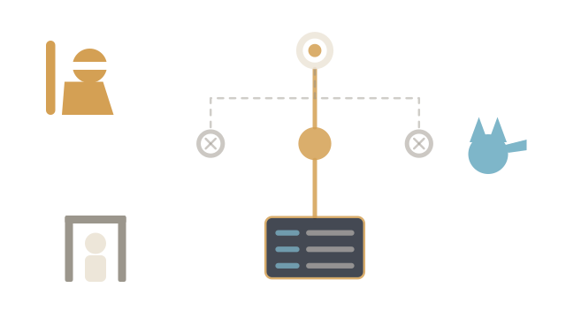
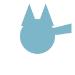

Pick a question. Drag sideways. One click starts the investigation.
The conversation grows as Tiresias asks why and the Sphinx tests each answer. The bar below will fill from Understand to Answer.
Pick a question. Drag sideways. One click starts the investigation.
The conversation grows as Tiresias asks why and the Sphinx tests each answer. The bar below will fill from Understand to Answer.

Pick a company and a suggested question, or ask your own.
Tiresias asks "why?" one level at a time. Every link it keeps is a SQL query and the rows it returned; the critic (

) tests each one, and you () decide at the gates.Select a link in the why-tree to see the SQL and the rows it rests on.